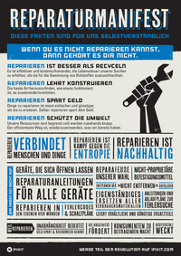
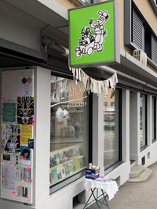
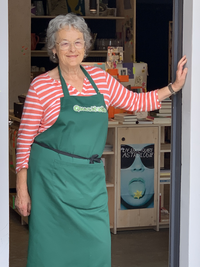
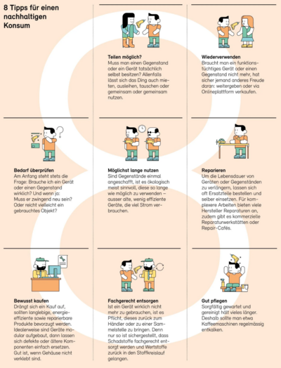

Neues von Quasitutto, 2. Ausgabe
Unser Reparaturservice: Quasitutto macht VIELES — QUASI ALLES. Zu diesem Thema möchten wir Sie mit dem Reparaturmanifest von der Reparaturplattform iFixit bekannt machen:iFixit Reparaturmanifest
iFixit Reparaturmanifest |
Dieses Manifest wurde von iFixit erschaffen und listet alle Fakten auf, die für uns Reparaturbegeisterte selbstverständlich sind. iFixit gibt es seit 20 Jahren — Quasitutto gibt es seit 13 Jahren. Die Zukunft ist reparierbar Dinge gehen kaputt und Verschleiss ist normal. Aber es sollte nicht gang und gäbe sein, Sachen wegzuwerfen, die man leicht wieder in Schuss bringen kann. Als grösste Online-Reparaturcommunity der Welt helfen wir jeden Tag Tausenden Menschen, damit sie ihre Dinge länger nutzen können. Eine reparierbare Zukunft beginnt bei dir: Reparier so viel wie möglich. iFixit arbeitet auf allen möglichen Ebenen daran, die Vision einer reparierbaren Zukunft wahr werden zu lassen. Gemeinsam können wir alles reparieren. Weitere Informationen: www.ifixit.com |
|
Schenken Sie Ihren Geräten ein 2. Leben! Mit über 25 kg Elektroschrott pro Kopf nimmt die Bevölkerung der Schweiz einen weltweiten Spitzenrang ein! Das müssen wir ändern — und zwar SOFORT! |
Dieses Manifest beinhaltet auch unsere Haltung zum Reparieren. Damit der Zugang zu unserem Reparaturservice für Sie etwas leichter wird, haben wir uns im Dorfzentrum nach einem geeigneten Ort umgesehen, wo wir Ihre defekten Gegenstände in Empfang nehmen, an unsere Leute zur Reparatur weitergeben und Ihnen diese tipptopp geflickt wieder aushändigen können.
Auf dieser Suche sind wir auf den an der Schwandelstrasse neu entstandenen Buchladen Elliesyium gestossen. Mit den beiden Inhaberinnen Eva Wischnitzky und Marisa Meroni haben wir uns sofort verstanden und es ist eine fruchtbare Zusammenarbeit entstanden.
el LIESYUM Buchladen
|
  |
Während den Ladenöffnungszeiten kann in Büchern geschmökert werden und/oder der Dienst von Quasitutto in Anspruch genommen werden. Also alle ihre defekten Gegenstände wie Mixer, Föhn, Toaster, Staubsauger etc. können Sie hier abgeben und diesen ein 2. Leben ermöglichen. Wir von Quasitutto sind an einem Tag pro Woche persönlich anwesend — im Moment ist dies der Donnerstag. Natürlich können Sie auch einfach mal reinschauen, Fragen stellen, Bücher kaufen oder Dinge zur Reparatur abgeben. Alles ganz unkompliziert. Wir offerieren Ihnen auch gerne einen Tee oder Kaffee und nach Möglichkeit einen Schwatz am runden Tisch Öffnungszeiten:
Selbstverständlich bleibt auch unsere Werkstatt an der Dorfstrasse 65 nach wie vor am Mittwoch von 14:00 bis 18:00 für Sie offen. |
Tipps vom Bundesamt
Zum Thema Nachhaltigkeit: 8 Tipps vom Bundesamt für Umwelt BAFU:

Quelle: "die umwelt" 1/2023 - Ressourcen im Kreislauf, Seite 28
Fühlen Sie sich unsicher bei einer Neuanschaffung? Gerne beraten und unterstützen wir Sie dabei: Tel: 077 403 03 06.
Müsterli eines unkonventionellen Reparaturauftrages
Kürzlich hatte ich Werkstattdienst am Mittwochnachmittag in unserer Werkstatt. Ein sympathischer Herr besuchte uns mit seinem defekten CD-Gerät aus einer älteren aber qualitativ sehr guten Stereoanlage. Eines seiner Enkelkinder habe vermutlich die Mechanik im Gerät gestört als er mit seinen Fingerchen die CD-Schublade „untersuchte“. Er bedauerte es sehr und hoffte fest, dass wir ihm das Gerät wieder flicken könnten, da alle anderen Komponenten der Anlage noch perfekt funktionierten. Ich habe das Gerät an Thom weitergegeben, er hat es untersucht und mir folgende SMS geschrieben:
|
hoi anna. noch kurz zur info: ich hab am samstag den cd player von herrn XY auseinander genommen und gründlich untersucht. irgendwie stoppte der motor, der die laserlinse hin- und herbewegt, nicht mehr. meine vermutung ist, dass irgend ein sensor defekt ist, der messen sollte, dass die linse am anschlag ist. super schwierig bzw. unmöglich zu reparieren. ich hab herrn XY informiert und ihm meine detailierten reparatur-fotos + ein video geschickt. ebenfalls hab ich ihm links geschickt, zu gleichen cd playern, die er sehr günstig occasion auf tutti/ricardo erwerben könne. falls er das gerät in einer anderen farbe kaufen würde, hab ich ihm angeboten, die "cd player schublade" aus dem andersfarbigen gerät in sein gerät einzubauen. er hat sich sehr für die infos und auskunft bedankt und wird sich wieder bei mir melden, sobald er aus seinen ferien aus sardinien zurück ist. 😎🌊 gruss, thom |
Das ist Quasitutto-Dienstleistung: Wir haben auch für unmöglich Scheinendes eine Möglichkeit.
Nächste Anlässe
Repair-Café: 21. Oktober, 12-16 Uhr, Schützenhalle Thalwil
Das Repair-Café findet 3mal jährlich (samstags 12:00-16:00) in der Schützenhalle statt. Die Daten werden auf der Homepage www.repaircafe-thalwil.ch bekannt gegeben.Internationaler Tag für Reparatur: 21. Oktober
Der internationale Tag für die Reparatur wurde 2017 eingeführt, um den Wert und die Wichtigkeit des Reparierens und Veranstaltungen wie Repair-Cafés zu fördern. Der Aktionstag findet jährlich am dritten Samstag im Oktober statt, erstmals am 21. Oktober 2017. Der internationale Tag für Reparatur wird von Open Air Alliance organisiert, eine internationale Gruppierung von Organisationen, die zusammen daran arbeiten, Elektroprodukte haltbarer und reparierbarer zu machen. (The Repair Cafe Foundation NL, iFixit, Die Stiftung Anstiftung).Weihnachtsmarkt: 8. Dezember 15-21 Uhr, Gotthardstrasse Thalwil
Gerne können Sie unser Neues von Quasitutto auch an Interessierte, Freunde und Bekannte weiterleiten. Kritik und Tipps sind willkommen.
Reparaturfreudige Grüsse,
Das Quasitutto-Team
Impressum
- Redaktions-Team: Maria Fritschy und Anna Michel
- Technischer Support: Thomas Hartmeier
Sollte Ihnen Neues von Quasitutto nicht gefallen, können Sie es hier abbestellen.